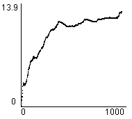
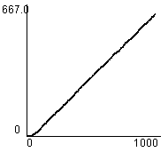
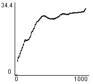
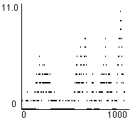
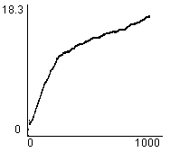
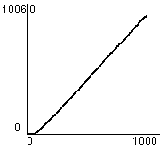
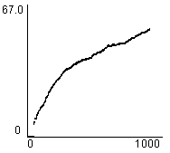
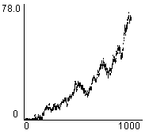

1. Editor
2. Simulator
3. Evaluation Tools
4. An Example Session
5. Algorithms
 a. Driving policies
a. Driving policies
 b. Traffic light controllers
b. Traffic light controllers
 1) Random
1) Random
 2) Most Cars
2) Most Cars
 3) RLD
3) RLD
 4) Hillclimbing
4) Hillclimbing
 5) Longest Queue
5) Longest Queue
 6) Relative LQ
6) Relative LQ
 7) Best first
7) Best first
 8) TC-1
8) TC-1
 9) TC-2
9) TC-2
 10) TC-3
10) TC-3
 11) TC-1++
11) TC-1++
 12) TC-2++
12) TC-2++
 13) TC-3++
13) TC-3++
 14) ACGJ-1
14) ACGJ-1
 15) ACGJ-2
15) ACGJ-2
 16) ACGJ-3
16) ACGJ-3
 17) GenNeural
17) GenNeural
TC-1
TC-1 is a reinforcement learning algorithm which will try to find a optimal policy for the traffic lights that will minimize the waiting time of the roadusers. To do so it calculates the gain for each traffic light, then it selects the configuration of trafficlights per roadcrossing which has the highest summed gain value.
The gain of each traffic light is determined by the roadusers who are in the waiting queue of this trafficlight. Each one of the roadusers gives a vote for red and green, denoted by Q(green) and Q(red), the difference between them is the benefit for this roaduser to put this trafficlight to green. All benefits are summed and form the gain of this traffic light.
Initialy the Q values for red and green are set to zero for all possible situations. When a roaduser moves this will change the Q value of that situation. After a while, when all possible situations have accourd a couple of times, the system will learn a optimal policy which will result in an increase of performance.
The Q value for a current situation is calculated by summing over each possible situation (target) which is reachable for this roaduser at this situation. Per target the chance of reaching this target (from this situation) is multiplied by the instant reward plus the reward for reaching the next situation. This reward of the next situation is subjected to a certain discount factor, this will make sure that past event won't influence future decisions to much. In formula form this will look like:
Q = SUM [ P * (R + j * V) ]
The instant reward is 1 if the roaduser has to wait, else it's 0. The V value is calculated by multiplying the chance that the light is L given this situation by the Q value of this situation. This is done for L is green and red and the V value is the sum of the two.
| (Map: Simple) Average Junction Waiting Time |  |
| (Map: Simple) Total Road Users Arrived |  |
| (Map: Simple) Average Trip Waiting Time |  |
| (Map: Simple) Total Waiting Queue Length |  |
| (Map: Complex) Average Junction Waiting Time |  |
| (Map: Complex) Total Road Users Arrived |  |
| (Map: Complex) Average Trip Waiting Time |  |
| (Map: Complex) Total Waiting Queue Length |  |
Thanks to Marco Wiering, Utrecht University.